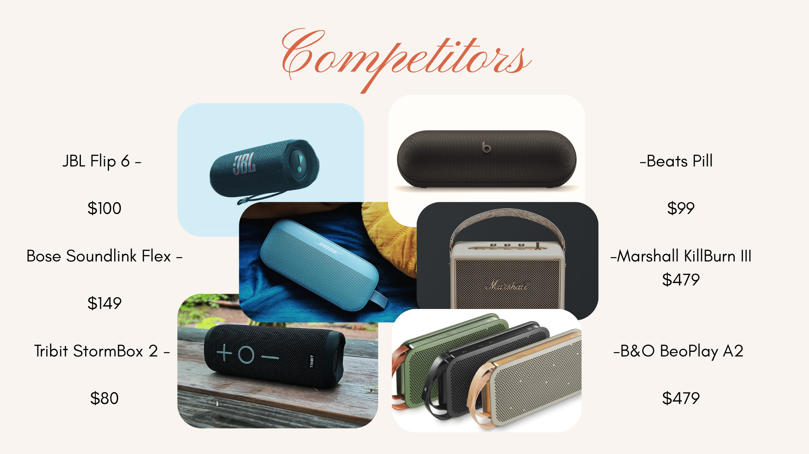
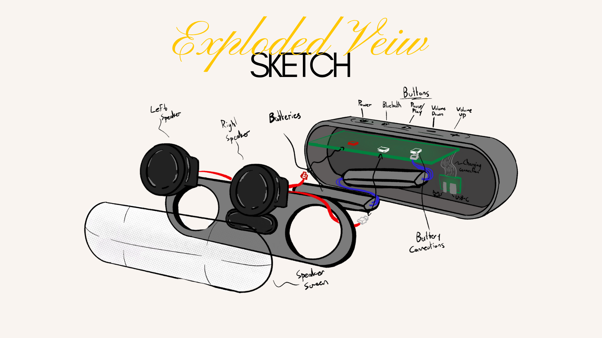
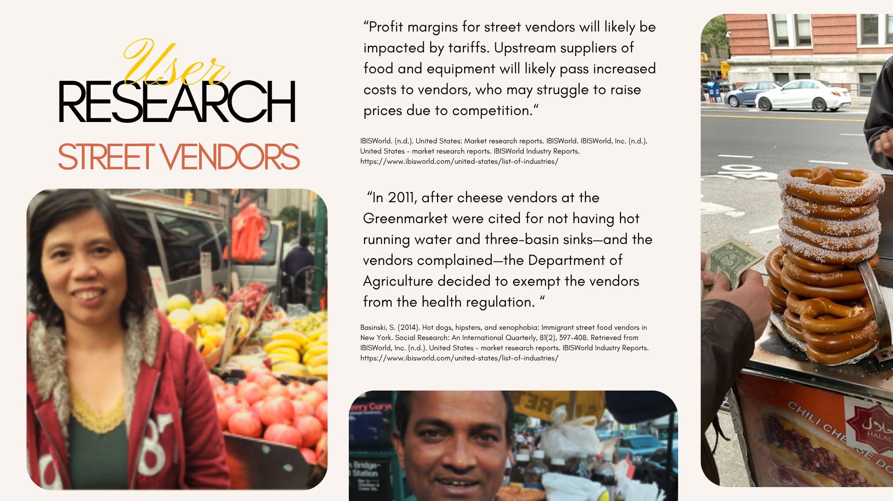
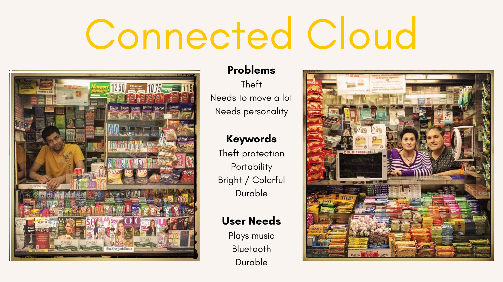
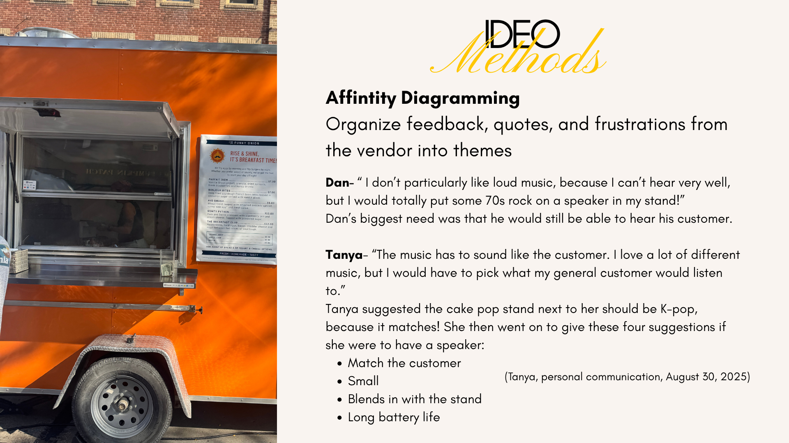
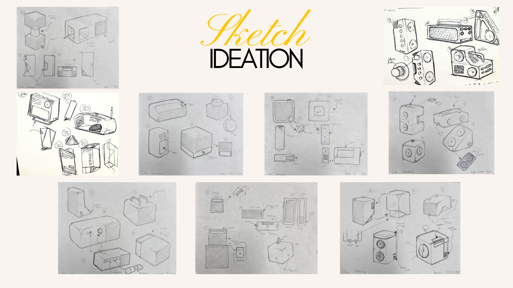
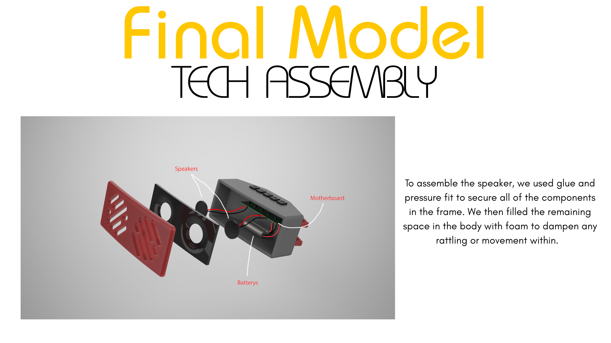
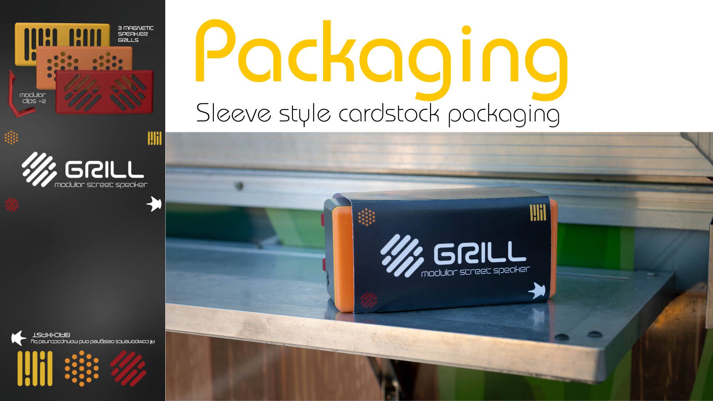
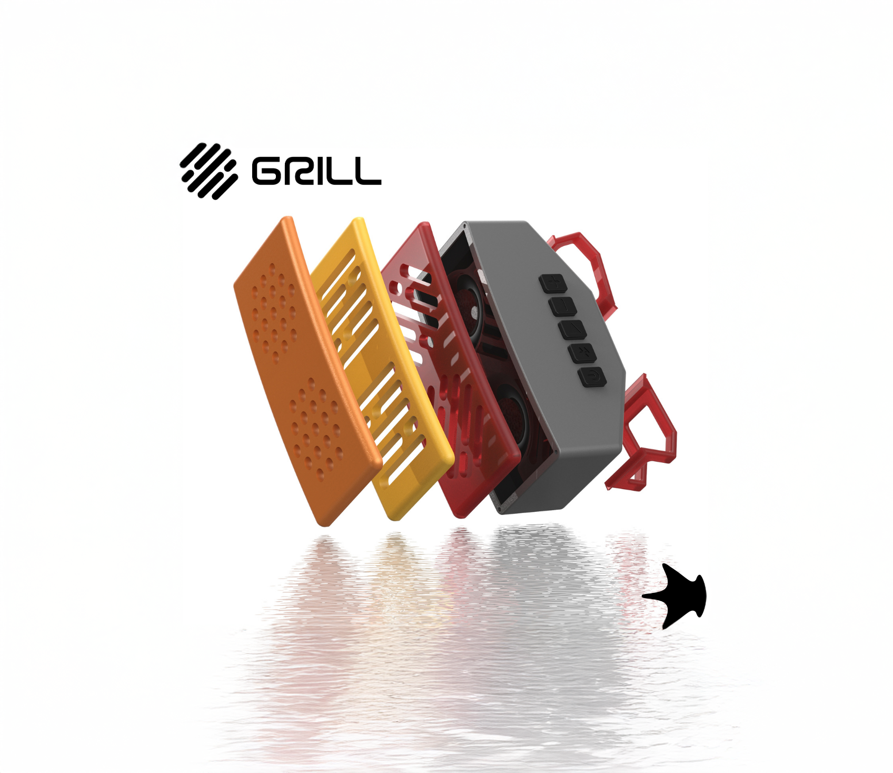

Grill Speaker
Overview
A modular Bluetooth speaker built to be personalized. Panels, finishes and components swap out, so each owner builds a setup that fits their style, and the platform grows with new add-ons over time.


Research
It started with a full teardown of an existing speaker, then turned to the assigned users: street vendors. How they move, set up and work through a day shaped every decision on portability, durability and flexibility.



Development
Panels, finishes and mounting were treated as variables, not fixed decisions, so the speaker adapts to the person using it and stays useful as their needs change.



